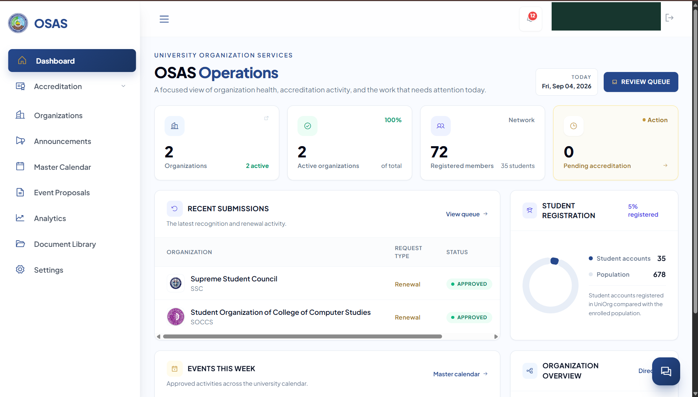
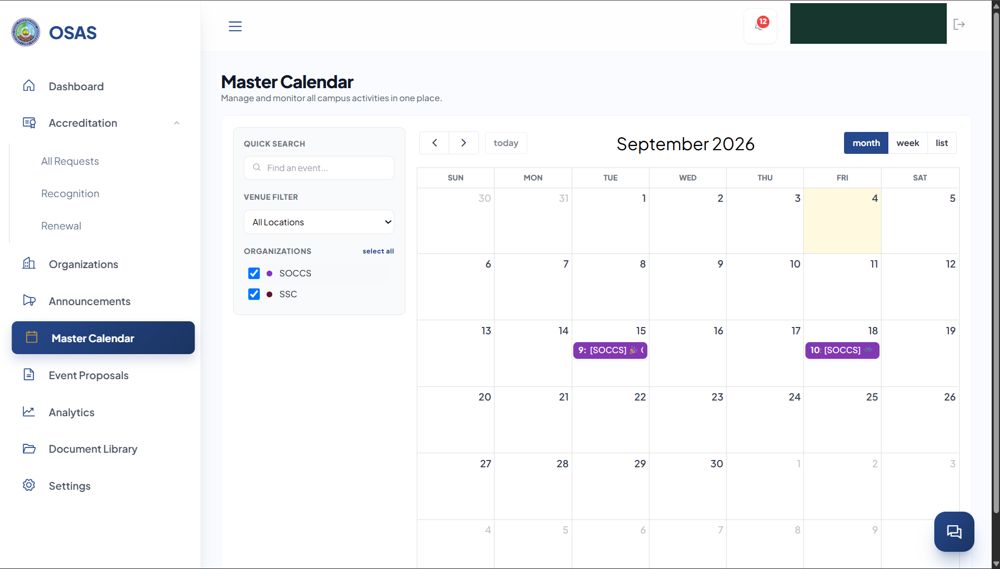
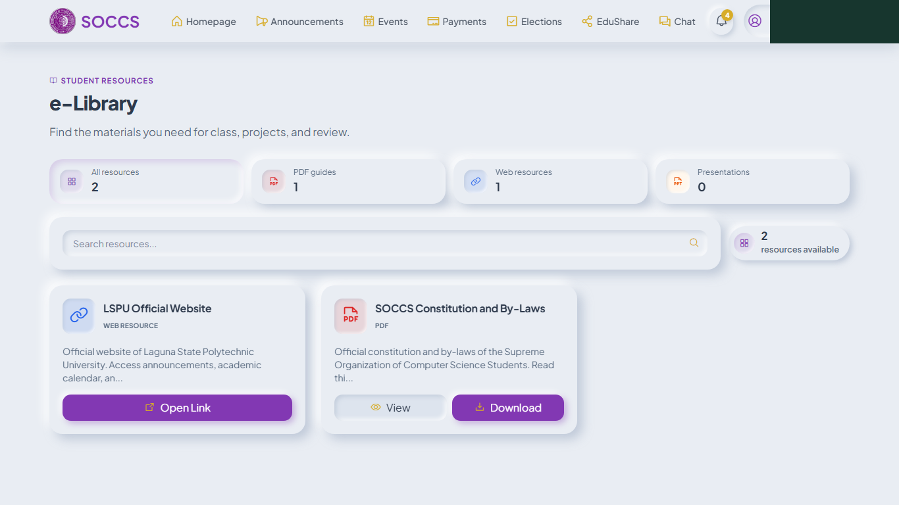
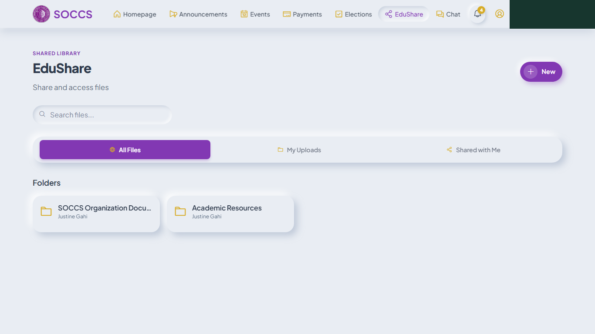

Design & develop
Centralize accreditation, document storage, and activity monitoring, with organization profiles and role-based workspaces.
A capstone research project
A Configurable University-Wide Student Organization Management Platform with OCR and NLP for Document Processing and Auto-Tagging
One configurable workspace for student organizations. A clearer view of accreditation, activities, and documents for OSAS.

Watch our audiovisual presentation.
A closer look at the platform, from sign-in to campus oversight.
UNIORG brings university oversight and organization-level workspaces into one web platform for LSPU Santa Cruz Campus.
Developed for OSAS, it combines accreditation tracking, document storage, activity scheduling, payments, elections, academic resources, and communication. OCR extracts text from documents; NLP supports summaries and searchable tags.
Research scope: LSPU Santa Cruz Campus and its 39 recognized student organizations. Source notes ↗
BSIT — Web and Mobile Application Development
College of Computer Studies
Laguna State Polytechnic University
Santa Cruz Campus
Office of Student Affairs
and Services
Chapter I identifies manual paper transactions and disconnected online tools as sources of delayed approvals, disorganized records, and fragmented student communication.
Officers submit multiple requirements while OSAS tracks compliance and reviews records manually.
Activities, files, payments, and elections are handled across separate tools, without a shared university view.
Students need an accessible, private channel for concerns and a reliable place for organization information.
Design, develop, test, and evaluate UNIORG as a configurable web platform for the Office of Student Affairs and Services of LSPU Santa Cruz Campus.
Centralize accreditation, document storage, and activity monitoring, with organization profiles and role-based workspaces.
Test the ten major feature areas, including OCR extraction, NLP summarization and auto-tagging, and access control.
Assess quality factors, usefulness, ease of use, attitude, intention to use, and experience through a TAM-based evaluation.
A descriptive-developmental research design, with Agile development and a Technology Acceptance Model evaluation.
Requirements came from stakeholder interviews and the OSAS accreditation workflow. Development progressed through six sprints, with functional testing and stakeholder feedback informing refinement.
Stakeholder interviews and requirements
Architecture, data models, and interfaces
Organization modules and document processing
Functional checks and user acceptance
Deployment and documentation
Ten documented black-box cases cover authentication, workspaces, accreditation, OCR, NLP, events, payments, voting, resources, and feedback.
428 respondents: 200 students, 161 organization officers, 56 advisers, 9 deans, and 2 OSAS administrators. Ratings use a five-point scale.
Findings describe the reported campus evaluation. Controlled test results do not establish unrestricted performance or production readiness.
Role-based portals connect OSAS, deans, advisers, officers, and students.
Organizations manage their own workspaces while OSAS oversees compliance and university-wide activity. Event proposals follow dean and OSAS review; payment records use receipt submission and verification.
Accreditation documents and organizational records
OCR reads text for document data processing
NLP supports summaries and automatic tags
Conceptual workflow summarized from the manuscript; extraction quality depends on document quality and configuration.
Multi-org workspace & profiling
Accreditation & document repository
Activity scheduling & master calendar
Centralized payment tracking
Student governance & elections
Academic resources & EduShare
Communication & feedback hub
Role-based access control
OCR document data extraction
NLP summaries & auto-tagging
Select a screenshot to inspect it.
Account identities have been redacted.
Review accreditation status, recent submissions, and organization activity from a central dashboard.
Review organization renewal requests and follow their status through the accreditation workbench.

Browse approved organization activities in one calendar and filter the university-wide view.
Search organization documents and narrow records by college, accreditation year, and archive status.

Browse categorized resources and open or download materials from the organization e-library.

Organize academic files in folders with shared and personal upload views.
Selected from the supplied UNIORG research screenshots. SOCCS is an organization workspace shown within UNIORG. Screenshot provenance & redactions ↗
Results below are transcribed from the researchers’ latest manuscript. They describe the documented tests and respondent ratings; this repository has not independently reproduced the study.
Five stakeholder groups
Chapter III, §3.6
“Strongly Agree” · reported SD 0.59
Table 4.62
The reported means range from 4.62 to 4.66. Each falls within the manuscript’s “Strongly Agree” range of 4.21–5.00.
Descriptive ratings measure user acceptance. They do not measure OCR accuracy or quantify time saved.
| Criterion | Mean / 5 | SD |
|---|---|---|
| Quality factors | 4.66 | 0.59 |
| Perceived usefulness | 4.64 | 0.59 |
| Perceived ease of use | 4.62 | 0.60 |
| Attitude toward using | 4.64 | 0.59 |
| Behavioral intention to use | 4.64 | 0.58 |
| Experience | 4.66 | 0.59 |
The reported acceptance ratings describe the campus evaluation. Wider deployment still requires pilot runs and validation in the live environment. Read results and limitations ↗
Read the research, explore the platform, and find the guides behind UNIORG.
Read the complete 441-page manuscript in the PDF viewer.
02 / DOCUMENTATIONResearch scope, reported findings, and supporting references.
03 / USER MANUALAll 60 role-based procedures, with captioned screenshots and an image viewer.
04 / DIAGRAMSConceptual framework and system diagrams from the research materials.
05 / APPLICATION SOURCEApplication requirements, installation, configuration, and deployment guidance.
06 / LIVE SYSTEMAccess the UNIORG login page for students and authorized university personnel.